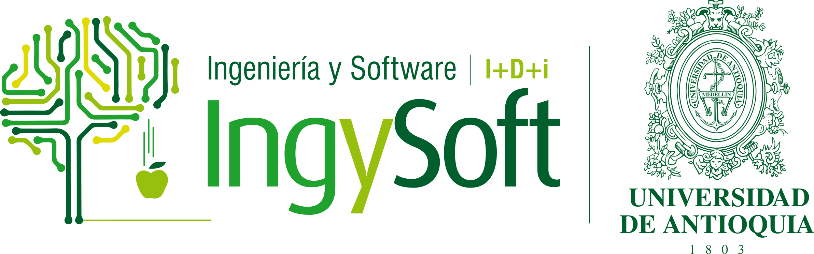

<title>In2Lab</title>
<link rel="preconnect" href="https://fonts.googleapis.com">
<link rel="stylesheet" href="https://fonts.googleapis.com/css2?family=Syne:wght@400;600;700;800&family=DM+Sans:ital,opsz,wght@0,9..40,300;0,9..40,400;0,9..40,500;1,9..40,300&display=swap">

<style>
/* ── TOKENS ─────────────────────────────── */
:root {
  --c-bg:         #EDF6F8;
  --c-surface:    #FFFFFF;
  --c-surface-2:  #F2F9FA;
  --c-text:       #0B2830;
  --c-muted:      #3D6B78;
  --c-faint:      #7AA0AB;
  --c-primary:    #07323D;
  --c-mid:        #157699;
  --c-teal:       #3FBFB0;
  --c-green:      #6AA820;
  --c-border:     #C0D9E0;
  --c-hero:       #051D25;
  --r:            4px;
  --nav-h:        3.25rem;
}
@media (prefers-color-scheme: dark) {
  :root:not([data-theme="light"]) {
    --c-bg:        #061920;
    --c-surface:   #0C2830;
    --c-surface-2: #0F2F38;
    --c-text:      #DEF0F4;
    --c-muted:     #7EB5C2;
    --c-faint:     #4A8090;
    --c-primary:   #3FBFB0;
    --c-mid:       #5DD3C8;
    --c-teal:      #7FE0D8;
    --c-green:     #92D050;
    --c-border:    #193A45;
    --c-hero:      #020E14;
  }
}
:root[data-theme="dark"] {
  --c-bg:        #061920;
  --c-surface:   #0C2830;
  --c-surface-2: #0F2F38;
  --c-text:      #DEF0F4;
  --c-muted:     #7EB5C2;
  --c-faint:     #4A8090;
  --c-primary:   #3FBFB0;
  --c-mid:       #5DD3C8;
  --c-teal:      #7FE0D8;
  --c-green:     #92D050;
  --c-border:    #193A45;
  --c-hero:      #020E14;
}

/* ── RESET ───────────────────────────────── */
*,*::before,*::after{box-sizing:border-box;margin:0;padding:0}
html{scroll-behavior:smooth;font-size:16px}
body{
  font-family:'DM Sans',system-ui,sans-serif;
  background:var(--c-bg);
  color:var(--c-text);
  line-height:1.65;
}
h1,h2,h3,h4{
  font-family:'Syne',system-ui,sans-serif;
  text-wrap:balance;
  line-height:1.15;
}
a{color:var(--c-mid);text-decoration:none}
a:hover{text-decoration:underline}
img{max-width:100%}

/* ── LAYOUT ──────────────────────────────── */
.wrap{max-width:1100px;margin:0 auto;padding-inline:1.5rem}
section{padding-block:5rem}

.eyebrow{
  font-size:.72rem;font-weight:500;letter-spacing:.13em;
  text-transform:uppercase;color:var(--c-teal);margin-bottom:.65rem;display:block;
}
.sec-heading{
  font-size:clamp(1.75rem,3.5vw,2.5rem);
  font-weight:800;color:var(--c-text);margin-bottom:1.5rem;
}

/* ── NAV ─────────────────────────────────── */
nav{
  position:sticky;top:env(safe-area-inset-top,0px);
  z-index:100;background:#07323D;height:var(--nav-h);
  display:flex;align-items:center;
}
.nav-inner{
  display:flex;align-items:center;gap:2rem;
  width:100%;max-width:1100px;margin:0 auto;padding-inline:1.5rem;
}
.nav-logo{
  display:flex;align-items:center;flex-shrink:0;
}
.nav-logo img{
  height:2rem;width:auto;
  background:#FFF;border-radius:3px;
  padding:2px 6px;
  display:block;
}
.nav-links{display:flex;gap:1.75rem;list-style:none;margin-left:auto;align-items:center}
.nav-links a{
  font-size:.875rem;font-weight:500;color:rgba(255,255,255,.7);
  transition:color .15s;
}
.nav-links a:hover{color:#FFF;text-decoration:none}
.nav-gh{
  display:inline-flex;align-items:center;gap:.4rem;
  font-size:.78rem;font-weight:500;color:#3FBFB0 !important;
  border:1px solid rgba(63,191,176,.4);border-radius:var(--r);
  padding:.28rem .7rem;transition:background .15s;
}
.nav-gh:hover{background:rgba(63,191,176,.12);text-decoration:none !important}
.nav-burger{display:none;background:none;border:none;color:#FFF;font-size:1.3rem;cursor:pointer;margin-left:auto;line-height:1}

/* ── HERO ────────────────────────────────── */
#hero{
  position:relative;background:var(--c-hero);
  min-height:88vh;display:flex;align-items:center;
  overflow:hidden;padding-block:0;
}
#hero-canvas{
  position:absolute;inset:0;width:100%;height:100%;opacity:.5;
  pointer-events:none;
}
.hero-content{position:relative;z-index:2;padding-block:7rem 5rem}

.hero-tag{
  display:inline-flex;align-items:center;gap:.5rem;
  font-size:.7rem;font-weight:500;letter-spacing:.12em;text-transform:uppercase;
  color:rgba(255,255,255,.5);margin-bottom:1.5rem;
}
.hero-tag::before{
  content:'';display:block;width:20px;height:1px;background:#3FBFB0;
}

h1.hero-title{
  font-family:'Syne',sans-serif;
  font-size:clamp(2.6rem,7vw,5rem);
  font-weight:800;color:#FFF;line-height:1.04;
  letter-spacing:-.03em;margin-bottom:0;
}
h1.hero-title em{font-style:normal;color:#3FBFB0}

.hero-sub{
  font-size:clamp(.95rem,1.8vw,1.15rem);
  color:rgba(255,255,255,.6);max-width:500px;
  margin-top:1.5rem;margin-bottom:2.5rem;line-height:1.65;
}
.hero-btns{display:flex;gap:.85rem;flex-wrap:wrap}

.btn{
  display:inline-flex;align-items:center;gap:.4rem;
  padding:.72rem 1.4rem;border-radius:var(--r);
  font-family:'DM Sans',sans-serif;font-size:.9rem;font-weight:600;
  transition:transform .15s,background .15s,border-color .15s;
  cursor:pointer;
}
.btn:hover{transform:translateY(-2px);text-decoration:none}
.btn-teal{background:#3FBFB0;color:#07323D}
.btn-teal:hover{background:#5DD3C8}
.btn-ghost{
  border:1.5px solid rgba(255,255,255,.28);
  color:rgba(255,255,255,.82);background:transparent;
}
.btn-ghost:hover{border-color:rgba(255,255,255,.65);background:rgba(255,255,255,.06)}

.hero-stats{
  display:flex;gap:3rem;margin-top:4.5rem;flex-wrap:wrap;
  border-top:1px solid rgba(255,255,255,.1);padding-top:2.5rem;
}
.stat-n{
  font-family:'Syne',sans-serif;font-size:2rem;font-weight:800;
  color:#FFF;line-height:1;font-variant-numeric:tabular-nums;
}
.stat-l{font-size:.72rem;color:rgba(255,255,255,.45);letter-spacing:.05em;margin-top:.2rem}

/* ── ABOUT ───────────────────────────────── */
#about{background:var(--c-surface)}
.about-grid{
  display:grid;grid-template-columns:1fr 1fr;
  gap:4rem;align-items:start;
}
.about-text p{color:var(--c-muted);margin-bottom:1rem;font-size:1.02rem}
.about-text p strong{color:var(--c-text)}
.about-text p:last-child{margin-bottom:0}

.info-list{display:flex;flex-direction:column;gap:1rem}
.info-row{
  display:flex;flex-direction:column;gap:.2rem;
  border-left:3px solid var(--c-teal);padding:.7rem 1rem;
  background:var(--c-surface-2);border-radius:0 var(--r) var(--r) 0;
}
.info-row dt{
  font-size:.67rem;font-weight:500;letter-spacing:.1em;
  text-transform:uppercase;color:var(--c-faint);
}
.info-row dd{font-size:.9rem;font-weight:500;color:var(--c-text)}
.info-row dd a{color:var(--c-mid)}

/* ── RESEARCH ────────────────────────────── */
#research{background:var(--c-bg)}
.research-grid{
  display:grid;grid-template-columns:repeat(3,1fr);gap:1.25rem;
}
.r-card{
  background:var(--c-surface);border:1px solid var(--c-border);
  border-radius:var(--r);padding:1.5rem;
  position:relative;overflow:hidden;
}
.r-card::after{
  content:'';position:absolute;top:0;left:0;right:0;height:3px;
  background:linear-gradient(90deg,#3FBFB0,#157699);
}
.r-icon{font-size:1.5rem;margin-bottom:.9rem;display:block}
.r-card h3{font-size:.98rem;font-weight:700;color:var(--c-text);margin-bottom:.45rem}
.r-card p{font-size:.855rem;color:var(--c-muted);line-height:1.55}

/* ── TEAM ────────────────────────────────── */
#team{background:var(--c-surface)}
.team-intro{max-width:620px;color:var(--c-muted);margin-bottom:2.5rem}
.team-grid{
  display:grid;
  grid-template-columns:repeat(auto-fill,minmax(210px,1fr));
  gap:1.1rem;
}
.m-card{
  background:var(--c-surface-2);border:1px solid var(--c-border);
  border-radius:var(--r);padding:1.15rem;
  display:flex;flex-direction:column;gap:.4rem;
}
.m-card.coord{
  border-color:var(--c-teal);background:var(--c-surface);
}
.m-card.coord .m-name::after{
  content:'★';margin-left:.35rem;font-size:.65rem;
  color:var(--c-teal);vertical-align:middle;
}
.m-name{
  font-family:'Syne',sans-serif;font-size:.94rem;font-weight:700;
  color:var(--c-text);line-height:1.3;
}
.m-role{
  font-size:.68rem;font-weight:500;letter-spacing:.07em;
  text-transform:uppercase;color:var(--c-teal);
}
.m-degree{font-size:.78rem;color:var(--c-muted);line-height:1.4}
.m-since{font-size:.72rem;color:var(--c-faint)}
.m-links{
  margin-top:auto;padding-top:.7rem;
  border-top:1px solid var(--c-border);
  display:flex;gap:.4rem;flex-wrap:wrap;
}
.m-link{
  font-size:.72rem;font-weight:500;
  padding:.18rem .5rem;border-radius:2px;
  background:var(--c-bg);color:var(--c-mid);
  border:1px solid var(--c-border);
  transition:background .12s,color .12s;display:inline-flex;align-items:center;gap:.2rem;
}
.m-link:hover{background:var(--c-mid);color:#FFF;text-decoration:none}
.m-link.ph{color:var(--c-faint);border-style:dashed;cursor:default;pointer-events:none}

/* ── CONTACT ──────────────────────────────── */
#contact{background:var(--c-bg)}
.contact-grid{display:grid;grid-template-columns:3fr 2fr;gap:3.5rem;align-items:start}
.contact-text p{color:var(--c-muted);margin-bottom:1rem}
.contact-list{display:flex;flex-direction:column;gap:.85rem}
.c-item{
  display:flex;gap:.85rem;align-items:flex-start;
  padding:1rem;background:var(--c-surface);
  border:1px solid var(--c-border);border-radius:var(--r);
}
.c-icon{font-size:1.1rem;flex-shrink:0;line-height:1.4}
.c-item dt{
  font-size:.67rem;font-weight:500;letter-spacing:.08em;
  text-transform:uppercase;color:var(--c-faint);margin-bottom:.15rem;
}
.c-item dd{font-size:.875rem;color:var(--c-text);line-height:1.45}
.c-item dd a{color:var(--c-mid)}

/* ── FOOTER ───────────────────────────────── */
footer{
  background:#07323D;color:rgba(255,255,255,.5);
  font-size:.8rem;padding-block:2rem;
}
.foot-inner{
  display:flex;align-items:center;justify-content:space-between;
  gap:1rem;flex-wrap:wrap;
  max-width:1100px;margin:0 auto;padding-inline:1.5rem;
}
.foot-logo{
  font-family:'Syne',sans-serif;font-size:1rem;
  font-weight:800;color:#FFF;
}
.foot-logo span{color:#3FBFB0}
.foot-nav{display:flex;gap:1.5rem}
.foot-nav a{color:rgba(255,255,255,.5);transition:color .15s}
.foot-nav a:hover{color:#FFF;text-decoration:none}

/* ── RESPONSIVE ───────────────────────────── */
@media(max-width:760px){
  .about-grid,.contact-grid{grid-template-columns:1fr;gap:2rem}
  .research-grid{grid-template-columns:1fr 1fr}
  .nav-links{display:none}
  .nav-burger{display:block}
  .hero-stats{gap:1.75rem}
}
@media(max-width:520px){
  .research-grid{grid-template-columns:1fr}
  .team-grid{grid-template-columns:1fr 1fr}
}
@media(max-width:380px){
  .team-grid{grid-template-columns:1fr}
}
@media(prefers-reduced-motion:reduce){
  *{animation:none !important;transition-duration:.01ms !important}
}
</style>

<!-- NAV -->
<nav role="banner">
  <div class="nav-inner">
    <a class="nav-logo" href="#hero" aria-label="In2Lab — home">
      
    </a>
    <ul class="nav-links" role="list">
      <li><a href="#about">About</a></li>
      <li><a href="#research">Research</a></li>
      <li><a href="#team">Team</a></li>
      <li><a href="#contact">Contact</a></li>
      <li>
        <a class="nav-gh" href="https://github.com/IN2LABUDEA" target="_blank" rel="noopener" aria-label="GitHub organization">
          <svg width="13" height="13" viewBox="0 0 16 16" fill="currentColor" aria-hidden="true"><path d="M8 0C3.58 0 0 3.58 0 8c0 3.54 2.29 6.53 5.47 7.59.4.07.55-.17.55-.38 0-.19-.01-.82-.01-1.49-2.01.37-2.53-.49-2.69-.94-.09-.23-.48-.94-.82-1.13-.28-.15-.68-.52-.01-.53.63-.01 1.08.58 1.23.82.72 1.21 1.87.87 2.33.66.07-.52.28-.87.51-1.07-1.78-.2-3.64-.89-3.64-3.95 0-.87.31-1.59.82-2.15-.08-.2-.36-1.02.08-2.12 0 0 .67-.21 2.2.82.64-.18 1.32-.27 2-.27.68 0 1.36.09 2 .27 1.53-1.04 2.2-.82 2.2-.82.44 1.1.16 1.92.08 2.12.51.56.82 1.27.82 2.15 0 3.07-1.87 3.75-3.65 3.95.29.25.54.73.54 1.48 0 1.07-.01 1.93-.01 2.2 0 .21.15.46.55.38A8.013 8.013 0 0016 8c0-4.42-3.58-8-8-8z"/></svg>
          GitHub
        </a>
      </li>
    </ul>
    <button class="nav-burger" aria-label="Toggle menu" onclick="document.querySelector('.nav-links').style.display=document.querySelector('.nav-links').style.display==='flex'?'none':'flex'">☰</button>
  </div>
</nav>

<!-- HERO -->
<section id="hero" aria-label="Introduction">
  <canvas id="hero-canvas" aria-hidden="true"></canvas>
  <div class="wrap hero-content">
    <span class="hero-tag">Universidad de Antioquia · Facultad de Ingeniería · Medellín, Colombia</span>
    <h1 class="hero-title">
      Intelligent<br>
      <em>Information</em><br>
      Systems Lab
    </h1>
    <p class="hero-sub">We develop machine learning methods and intelligent systems that transform how complex information is processed, understood, and acted upon — advancing science and society.</p>
    <div class="hero-btns">
      <a href="#research" class="btn btn-teal">Explore research →</a>
      <a href="#team" class="btn btn-ghost">Meet the team</a>
    </div>
    <div class="hero-stats">
      <div>
        <div class="stat-n">13</div>
        <div class="stat-l">Researchers</div>
      </div>
      <div>
        <div class="stat-n">11</div>
        <div class="stat-l">PhDs</div>
      </div>
      <div>
        <div class="stat-n">6</div>
        <div class="stat-l">Research lines</div>
      </div>
      <div>
        <div class="stat-n">2009</div>
        <div class="stat-l">Active since</div>
      </div>
    </div>
  </div>
</section>

<!-- ABOUT -->
<section id="about" aria-labelledby="about-h">
  <div class="wrap">
    <div class="about-grid">
      <div class="about-text">
        <span class="eyebrow">About the group</span>
        <h2 class="sec-heading" id="about-h">Where intelligence meets information</h2>
        <p><strong>In2Lab</strong> — the Intelligent Information Systems Laboratory — is a research group at the <strong>Faculty of Engineering, Universidad de Antioquia</strong>, dedicated to the study and application of intelligent methods for complex information problems. Our work spans machine learning, pattern recognition, signal processing, computer vision, and cybersecurity, always with emphasis on real-world impact.</p>
        <p>We collaborate with national and international institutions, train new researchers at the undergraduate and graduate levels, and contribute to Colombia's scientific and technological development through projects funded by MinCiencias, industry partners, and international cooperation networks.</p>
        <p>Our culture values scientific rigor, open science, and meaningful impact. We publish in top venues, share our code and datasets, and actively mentor the next generation of engineers and scientists in a multidisciplinary environment.</p>
      </div>
      <dl class="info-list">
        <div style="padding:.75rem 1rem;background:var(--c-surface);border:1px solid var(--c-border);border-radius:var(--r);display:flex;align-items:center;justify-content:center;">
          
        </div>
        <div class="info-row">
          <dt>University</dt>
          <dd>Universidad de Antioquia (UdeA)</dd>
        </div>
        <div class="info-row">
          <dt>Faculty</dt>
          <dd>Facultad de Ingeniería</dd>
        </div>
        <div class="info-row">
          <dt>Location</dt>
          <dd>Medellín, Antioquia, Colombia</dd>
        </div>
        <div class="info-row">
          <dt>GrupLAC — MinCiencias</dt>
          <dd><a href="https://scienti.minciencias.gov.co/gruplac/jsp/visualiza/visualizagr.jsp?nro=00000000000712" target="_blank" rel="noopener">View official group profile ↗</a></dd>
        </div>
        <div class="info-row">
          <dt>GitHub organization</dt>
          <dd><a href="https://github.com/IN2LABUDEA" target="_blank" rel="noopener">github.com/IN2LABUDEA ↗</a></dd>
        </div>
        <div class="info-row">
          <dt>Coordinator</dt>
          <dd>Prof. Julián D. Arias-Londoño</dd>
        </div>
      </dl>
    </div>
  </div>
</section>

<!-- RESEARCH -->
<section id="research" aria-labelledby="research-h">
  <div class="wrap">
    <span class="eyebrow">What we do</span>
    <h2 class="sec-heading" id="research-h">Research lines</h2>
    <div class="research-grid">
      <article class="r-card">
        <span class="r-icon" aria-hidden="true">🧠</span>
        <h3>Machine Learning &amp; Pattern Recognition</h3>
        <p>Statistical learning, deep neural networks, generative models, and pattern analysis applied to structured and unstructured data across diverse application domains.</p>
      </article>
      <article class="r-card">
        <span class="r-icon" aria-hidden="true">💓</span>
        <h3>Biomedical Signal Processing</h3>
        <p>Analysis of physiological signals — EEG, ECG, voice, pathological sounds, and medical images — to support clinical diagnosis, monitoring, and translational research.</p>
      </article>
      <article class="r-card">
        <span class="r-icon" aria-hidden="true">🗣️</span>
        <h3>Speech &amp; Language Technologies</h3>
        <p>Automatic speech recognition, speaker profiling, pathological speech analysis, and natural language processing tailored to the linguistic diversity of Colombian Spanish.</p>
      </article>
      <article class="r-card">
        <span class="r-icon" aria-hidden="true">👁️</span>
        <h3>Computer Vision &amp; Image Analysis</h3>
        <p>Image classification, object detection, medical image interpretation, and visual inspection systems powered by convolutional and transformer-based architectures.</p>
      </article>
      <article class="r-card">
        <span class="r-icon" aria-hidden="true">🔒</span>
        <h3>Information Security</h3>
        <p>Cybersecurity, intrusion detection, vulnerability analysis, and privacy-preserving machine learning for robust and trustworthy information systems.</p>
      </article>
      <article class="r-card">
        <span class="r-icon" aria-hidden="true">⚙️</span>
        <h3>Intelligent Decision Systems</h3>
        <p>Multi-agent systems, optimization, autonomous control, and decision-support tools for applications in industry, healthcare, and education.</p>
      </article>
    </div>
  </div>
</section>

<!-- TEAM -->
<section id="team" aria-labelledby="team-h">
  <div class="wrap">
    <span class="eyebrow">Our people</span>
    <h2 class="sec-heading" id="team-h">Research team</h2>
    <p class="team-intro">Thirteen researchers with expertise spanning machine learning, signal processing, cybersecurity, and intelligent systems — supported by an active community of PhD, MSc, and undergraduate students.</p>
    <div class="team-grid" id="team-grid"></div>
  </div>
</section>

<!-- CONTACT -->
<section id="contact" aria-labelledby="contact-h">
  <div class="wrap">
    <div class="contact-grid">
      <div class="contact-text">
        <span class="eyebrow">Get in touch</span>
        <h2 class="sec-heading" id="contact-h">Join us or collaborate</h2>
        <p>We welcome prospective students, visiting researchers, and industry partners. If you are interested in graduate studies, a research internship, or a collaboration, reach out to us directly.</p>
        <p>In2Lab hosts undergraduate thesis projects, MSc and PhD research, and postdoctoral stays. We maintain active collaborations with European and Latin American research groups.</p>
        <a href="mailto:julian.ariasl@udea.edu.co" class="btn btn-teal" style="margin-top:.5rem">Contact the coordinator →</a>
      </div>
      <dl class="contact-list">
        <div class="c-item">
          <span class="c-icon" aria-hidden="true">🏛️</span>
          <div>
            <dt>Address</dt>
            <dd>Universidad de Antioquia<br>Facultad de Ingeniería<br>Medellín, Antioquia, Colombia</dd>
          </div>
        </div>
        <div class="c-item">
          <span class="c-icon" aria-hidden="true">🔬</span>
          <div>
            <dt>MinCiencias profile</dt>
            <dd><a href="https://scienti.minciencias.gov.co/gruplac/jsp/visualiza/visualizagr.jsp?nro=00000000000712" target="_blank" rel="noopener">GrupLAC ↗</a></dd>
          </div>
        </div>
        <div class="c-item">
          <span class="c-icon" aria-hidden="true">💻</span>
          <div>
            <dt>Open-source projects</dt>
            <dd><a href="https://github.com/IN2LABUDEA" target="_blank" rel="noopener">github.com/IN2LABUDEA ↗</a></dd>
          </div>
        </div>
        <div class="c-item">
          <span class="c-icon" aria-hidden="true">✉️</span>
          <div>
            <dt>Email</dt>
            <dd><a href="mailto:julian.ariasl@udea.edu.co">julian.ariasl@udea.edu.co</a></dd>
          </div>
        </div>
      </dl>
    </div>
  </div>
</section>

<!-- FOOTER -->
<footer role="contentinfo">
  <div class="foot-inner">
    <a href="#hero" class="foot-logo-img" aria-label="In2Lab — top">
      
    </a>
    <span>© 2026 In2Lab · Universidad de Antioquia</span>
    <nav class="foot-nav" aria-label="Footer links">
      <a href="https://scienti.minciencias.gov.co/gruplac/jsp/visualiza/visualizagr.jsp?nro=00000000000712" target="_blank" rel="noopener">GrupLAC</a>
      <a href="https://github.com/IN2LABUDEA" target="_blank" rel="noopener">GitHub</a>
      <a href="https://ingenieria.udea.edu.co" target="_blank" rel="noopener">UdeA Engineering</a>
    </nav>
  </div>
</footer>

<script>
/* ── TEAM DATA ─────────────────────────────────────────────────────── */
const TEAM = [
  {
    name: 'Julián D. Arias-Londoño',
    role: 'Coordinator',
    degree: 'PhD Automática (UNAL) · PhD Ing. Sistemas (UPM)',
    affil: 'Professor · since 2009',
    scholar: 'https://scholar.google.com/citations?user=ZTdSU3wAAAAJ',
    web: null,      // TODO: add personal page URL if available
    coord: true
  },
  {
    name: 'Luz Viviana Cobaleda E.',
    role: 'Researcher',
    degree: 'PhD Ing. Electrónica (UdeA, 2017 · Cum Laude)',
    affil: 'Professor · since 2022',
    scholar: null,  // TODO: add Google Scholar URL
    web: null
  },
  {
    name: 'Ana Lucía Pérez Patiño',
    role: 'Researcher',
    degree: 'PhD Ingeniería (UNAL, 2012)',
    affil: 'Professor · since 2013',
    scholar: null,  // TODO: add Google Scholar URL
    web: null
  },
  {
    name: 'Carlos A. Mera Banguero',
    role: 'Researcher',
    degree: 'PhD Ing. Sistemas (UNAL, 2017)',
    affil: 'Professor · since 2023',
    scholar: 'https://scholar.google.com/citations?user=YjBUdJYAAAAJ',
    web: null
  },
  {
    name: 'Danny A. Múnera Ramírez',
    role: 'Researcher',
    degree: 'PhD Informatique (U. Paris I, 2016)',
    affil: 'Professor · since 2009',
    scholar: null,  // TODO: add Google Scholar URL
    web: null
  },
  {
    name: 'Diego J.L. Botia Valderrama',
    role: 'Researcher',
    degree: 'PhD Ing. Electrónica (UdeA, 2015)',
    affil: 'Professor · since 2014',
    scholar: 'https://scholar.google.com/citations?user=wzUb7TAAAAAJ',
    web: null
  },
  {
    name: 'Gina P. Maestre Góngora',
    role: 'Researcher',
    degree: 'PhD Ing. Sistemas (U. Norte, 2018)',
    affil: 'Professor · since 2023',
    scholar: 'https://scholar.google.com/citations?user=-EfDLGsAAAAJ',
    web: null
  },
  {
    name: 'Raúl Ramos Pollán',
    role: 'Researcher',
    degree: 'PhD Informática (U. Porto, 2011)',
    affil: 'Professor · since 2018',
    scholar: 'https://scholar.google.com/citations?user=QObKt9IAAAAJ',
    web: null
  },
  {
    name: 'M. Bernarda Salazar Sánchez',
    role: 'Researcher',
    degree: 'PhD Ing. Electrónica (UdeA, 2018)',
    affil: 'Visiting professor · since 2022',
    scholar: 'https://scholar.google.com/citations?user=SY3ZiQ0AAAAJ',
    web: null
  },
  {
    name: 'Katerine Marceles Villalba',
    role: 'Researcher',
    degree: 'MSc Seguridad Informática (U. La Rioja, 2016)',
    affil: 'Professor · since 2023',
    scholar: null,  // TODO: add Google Scholar URL
    web: null
  },
  {
    name: 'Javier F. Botia Valderrama',
    role: 'Researcher',
    degree: 'PhD Ing. Electrónica (UdeA, 2016 · Cum Laude)',
    affil: 'Visiting professor · since 2024',
    scholar: null,  // TODO: add Google Scholar URL
    web: null
  },
  {
    name: 'A.J. Tamayo Herrera',
    role: 'Researcher',
    degree: 'PhD Cs. Computación (IPN México, 2023)',
    affil: 'Visiting professor · since 2025',
    scholar: 'https://scholar.google.com/citations?user=643heS8AAAAJ',
    web: null
  },
  {
    name: 'Gabriel D. Uribe Guerra',
    role: 'Researcher',
    degree: 'MSc Matemáticas (U. Puerto Rico, 2008)',
    affil: 'Lecturer · since 2022',
    scholar: null,  // TODO: add Google Scholar URL
    web: null
  }
];

function buildTeam() {
  const grid = document.getElementById('team-grid');
  grid.innerHTML = TEAM.map(m => `
    <article class="m-card${m.coord ? ' coord' : ''}" role="listitem">
      <div class="m-name">${m.name}</div>
      <div class="m-role">${m.role}</div>
      <div class="m-degree">${m.degree}</div>
      <div class="m-since">${m.affil}</div>
      <div class="m-links">
        ${m.scholar
          ? `<a href="${m.scholar}" target="_blank" rel="noopener" class="m-link" aria-label="Google Scholar profile of ${m.name}">Scholar ↗</a>`
          : `<span class="m-link ph" title="Google Scholar not yet linked">Scholar —</span>`}
        ${m.web
          ? `<a href="${m.web}" target="_blank" rel="noopener" class="m-link" aria-label="Personal page of ${m.name}">Web ↗</a>`
          : `<span class="m-link ph" title="Personal page not yet linked">Web —</span>`}
      </div>
    </article>
  `).join('');
}
buildTeam();

/* ── HERO NETWORK CANVAS ───────────────────────────────────────────── */
(function() {
  if (window.matchMedia('(prefers-reduced-motion: reduce)').matches) return;
  const cvs = document.getElementById('hero-canvas');
  const ctx = cvs.getContext('2d');
  let W, H, nodes, raf;
  const dpr = Math.min(window.devicePixelRatio || 1, 2);

  function resize() {
    if (raf) { cancelAnimationFrame(raf); raf = null; }
    W = cvs.offsetWidth; H = cvs.offsetHeight;
    cvs.width = W * dpr; cvs.height = H * dpr;
    ctx.setTransform(dpr, 0, 0, dpr, 0, 0);
    const n = Math.min(58, Math.floor(W * H / 12000));
    nodes = Array.from({length: n}, () => ({
      x: Math.random() * W, y: Math.random() * H,
      vx: (Math.random() - 0.5) * 0.38,
      vy: (Math.random() - 0.5) * 0.38,
      r: 1.5 + Math.random() * 1.8
    }));
    draw();
  }

  function draw() {
    ctx.clearRect(0, 0, W, H);
    const D = 145;
    for (let i = 0; i < nodes.length; i++) {
      const a = nodes[i];
      a.x += a.vx; a.y += a.vy;
      if (a.x <= 0 || a.x >= W) a.vx *= -1;
      if (a.y <= 0 || a.y >= H) a.vy *= -1;
      for (let j = i + 1; j < nodes.length; j++) {
        const b = nodes[j];
        const dx = a.x - b.x, dy = a.y - b.y;
        const d = Math.sqrt(dx*dx + dy*dy);
        if (d < D) {
          ctx.beginPath();
          ctx.strokeStyle = `rgba(63,191,176,${(1 - d/D) * 0.28})`;
          ctx.lineWidth = 0.7;
          ctx.moveTo(a.x, a.y); ctx.lineTo(b.x, b.y);
          ctx.stroke();
        }
      }
      ctx.beginPath();
      ctx.arc(a.x, a.y, a.r, 0, Math.PI * 2);
      ctx.fillStyle = 'rgba(63,191,176,0.62)';
      ctx.fill();
    }
    raf = requestAnimationFrame(draw);
  }

  const ro = new ResizeObserver(resize);
  ro.observe(cvs.parentElement);
  resize();
})();
</script>
